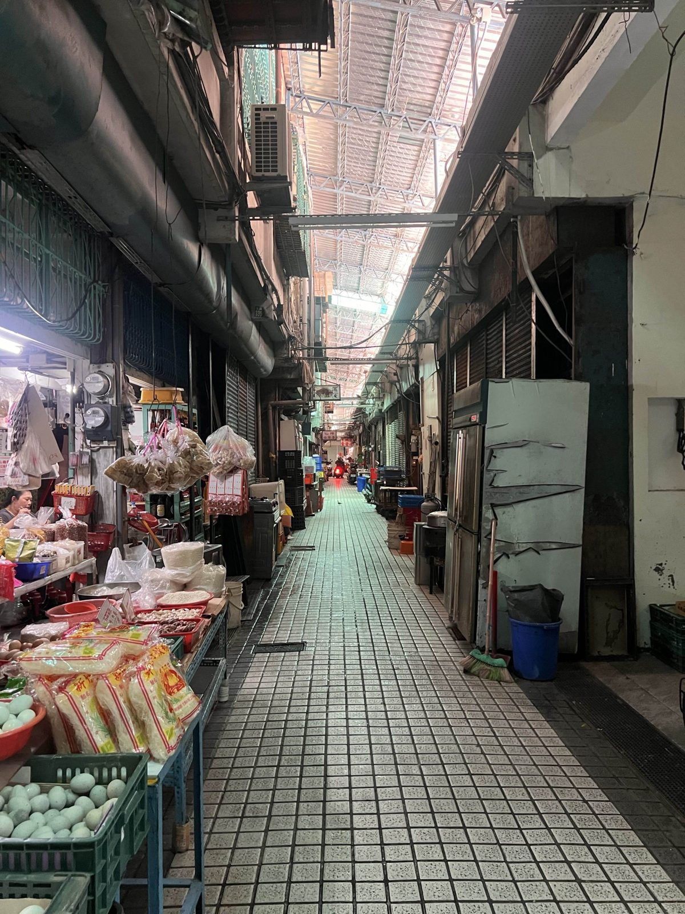
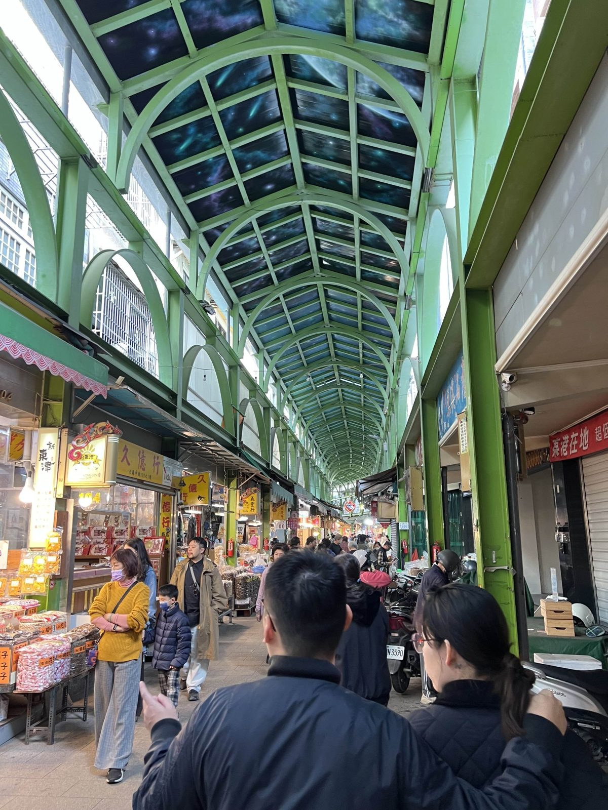
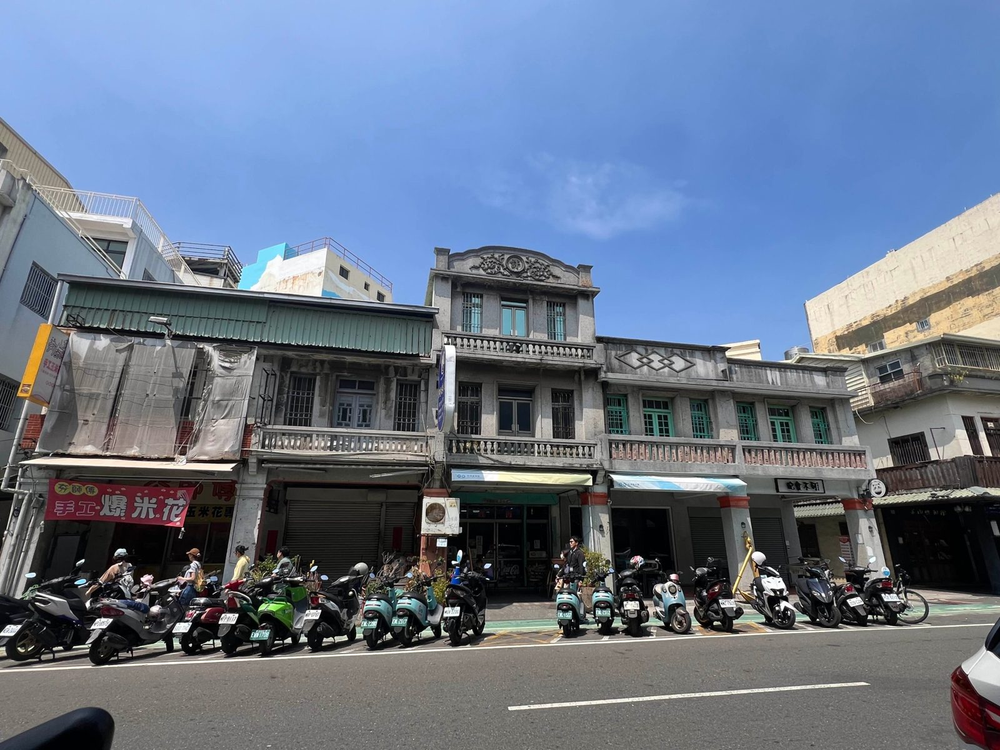
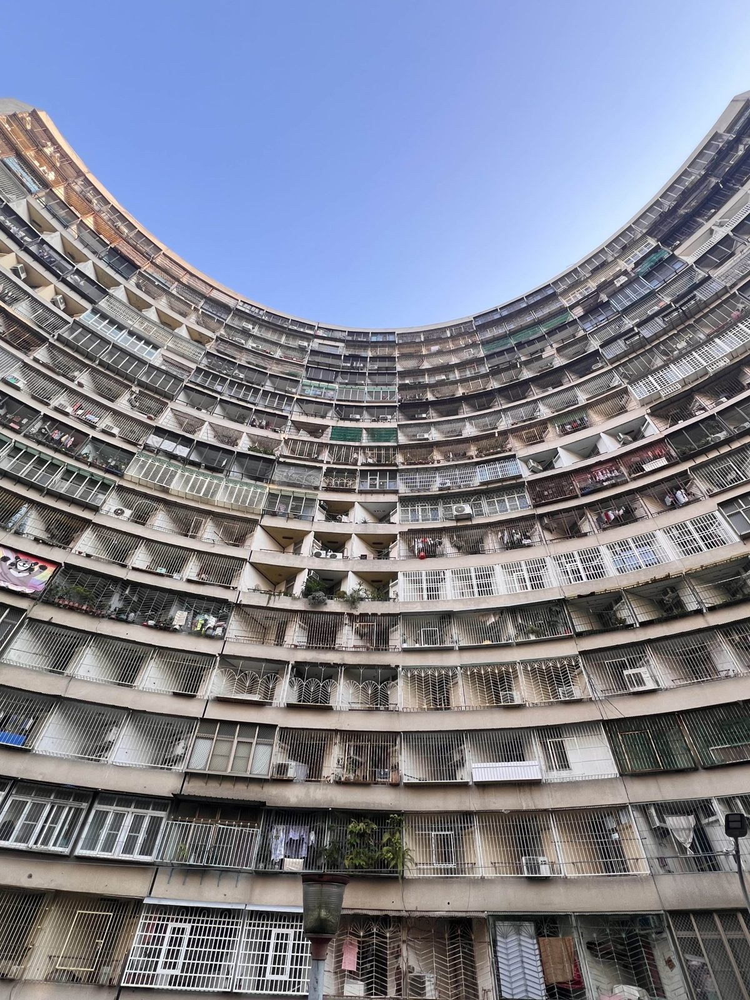
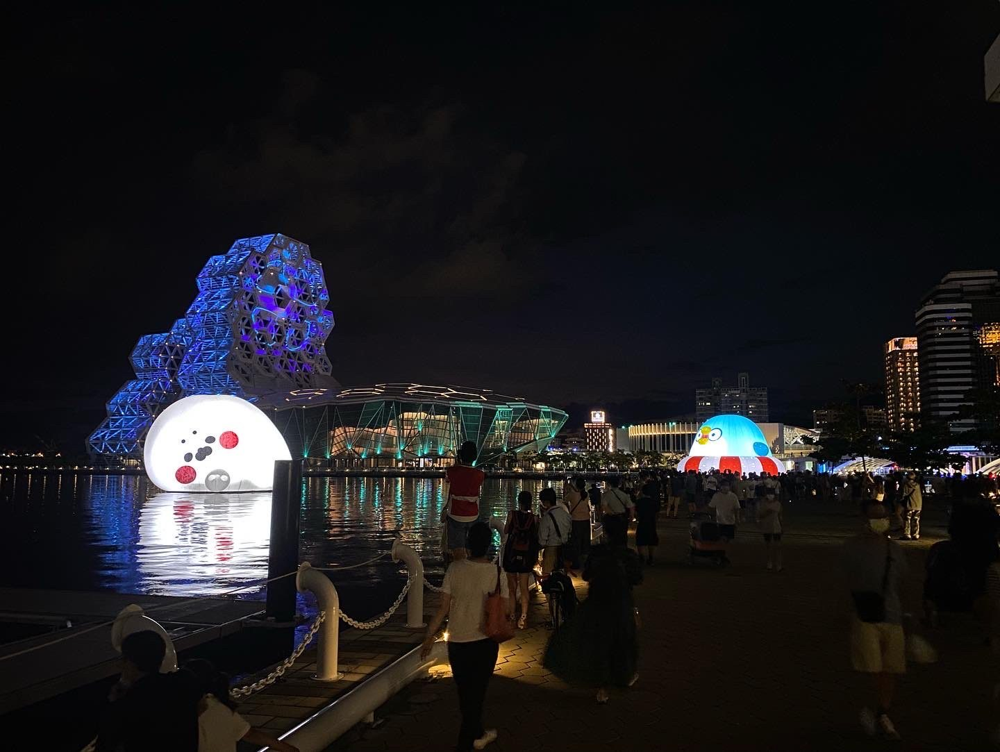

THE CITYIS NEVERFINISHED 城市不是完成品
同一座城市，不同的事物，以不同的速度改變。
線上策展｜高雄觀察｜含假設情境
城市從來沒完成過Never Finished
- 原本的直覺
- 城市有一張完成的樣子
- 本章的轉折
- 我們看見的只是其中一個瞬間
城市從來沒有真正完成的一天。
有些建築改變了模樣，生活卻繼續；有些建築留在原地，逐漸成為城市的共同記憶。也有些事物隨著時間消失，讓新的可能出現。
我們所看見的城市，只是它漫長演變過程中的一個瞬間。

反問你認為沒有改變的，是建築的外形，還是你辨認它的方法？
把時間拉近到一次買菜，我們會看見什麼？
把屋頂拆了，市場還在Tear Off the Roof
- 原本的直覺
- 市場的價值就是熱鬧與新鮮
- 本章的轉折
- 市場留下的是生活，不是建築
我想像三十年後的自由黃昏市場。
它可能不再有現在的鐵皮屋頂，停車場縮小了，市場與公園之間的界線也消失了。攤位可以重新排列，新的活動不斷出現。
但市場依然熱鬧，人們依然在這裡買菜、聊天、討價還價。
我不認為市場必須保留原本的建築，才能繼續是原本的市場。對我而言，市場真正重要的是不斷發生的生活，以及它持續容納變化的能力。
TRY｜試試看


同樣是老市場，差別不在屋頂，在有沒有人。
反問你期待市場改變的部分，會不會正是另一個人需要穩定的部分？
但市場可以改變，不代表旁邊的一切都要跟著改變。
那不是我的房子Not My House
- 原本的直覺
- 城市更新就是整片一起改
- 本章的轉折
- 改變的想像，也要停在別人的產權前面
城市的改變，也有它的界線。
我可以想像自由黃昏市場在三十年後擁有完全不同的樣貌，但這不代表周圍的私人住宅也必須跟著改變。
對於市場旁的老屋，我更傾向尊重屋主的選擇。或許整理立面、改善街道環境，就已經足夠。
城市不是建築師一個人的作品。它由無數不同的使用者與所有權人共同組成，而每個人對未來都有不同的期待。
我希望城市能持續改變，但不認為自己的想像，就有權決定別人的生活。

TRY｜試試看
你是建築師。點一間房子，把它改成你想像的樣子。
城市不是建築師一個人的作品。
人物與對話為作者想像。

反問當你想像一條街的未來，你有沒有問過住在那裡的人？
那麼，一棟屬於私人、卻被整座城市看見的建築呢？
85 不能倒The 85 Stays
- 原本的直覺
- 保留或改建只能二選一
- 本章的轉折
- 外形可以留下，內部可以更新
如果自由黃昏市場可以大幅改造，為什麼我卻希望保留 85 大樓？
因為有些建築的價值，早已超越原本的使用功能。
85 大樓對我而言，不只是一棟高樓，更是高雄天際線的一部分。即使它需要花費較高的成本更新，我仍然傾向保留它的形象，重新改善內部的使用方式。
城市需要改變，但不是所有事物都需要以同樣的方式改變。
85 大樓的外形早已成為整座城市的天際線，它的價值不只屬於業主；但正因如此，保留的成本也不該只由業主承擔。
決定一個地方該怎麼改變的，不是它有多老，而是它的價值在哪裡，以及誰有權決定。
TRY｜試試看
85 大樓老了，維修很貴。你要怎麼辦？
人物與對話為作者想像。
- Site場地
- Structure結構
- Skin外皮
- Services設備
- Space Plan空間配置
- Stuff物件
依 Stewart Brand 的建築六層重繪。85 大樓可以留下外皮，更新裡面的使用。


反問如果外形留下，進入它的條件改了，你還會說它沒有改變嗎？
接下來，換你來決定。
你會拆嗎？Would You Tear It Down?
這裡是一個思想實驗。你選擇的是假設條件，不是未來年份的答案。
- 原本的直覺
- 一條滑桿就是未來
- 本章的轉折
- 每個選擇依賴假設，也產生代價
我們以市場為場景，比較三種可能：局部調整、活動重組，或暫緩變動。每一種選擇都會留下一些東西，也會失去一些東西。
TRY｜試試看
反問你剛才改變了空間，還是只改變了畫面？維持它的人，有沒有出現在你的選項裡？
離開模型，把這個問題帶回下一次經過的街道。
城市不等你The City Won't Wait
展覽停在這裡，城市沒有。我們能帶走的不是一張最後的藍圖，而是一種再次觀察的方法。
- 原本的直覺
- 看完展覽就得到答案
- 本章的轉折
- 再次觀察也需要辨認自己的立場
下次經過熟悉的地方，試著分開記錄三件事：你實際看見什麼、你想起什麼、你據此推論什麼。再問誰正在維持這個地方，誰希望它改變。如果你來到一座還不熟悉的城市，也可以先承認自己尚未擁有它的過去。這份展覽從高雄開始，但觀看的練習不必停在高雄。
這是我在高雄的街。你的呢？在淡水，可能是清水街的市場；在你家附近，可能是一間已經拉下鐵捲門的店。

我們看見的是一個版本。
下一個版本，還需要被討論。